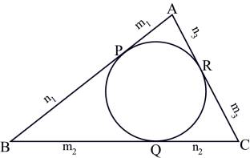

Problem E
In-Circle
Input: Standard Input
Output: Standard Output
In-circle of a triangle is the circle that touches all the three sides of the triangle internally. The center of the in-circle of a triangle happens to be the common intersection point of the three bisectors of the internal angles. In this problem you will not be asked to find the in-circle of a triangle, but will be asked to do the opposite!!

You can see in the figure above that the in-circle of triangle ABC touches the
sides AB, BC and CA at point P, Q and R respectively and P, Q and R divides AB,
BC and CA in ratio m1:n1, m2:n2 and m3:n3 respectively. Given these ratios and
the value of the radius of in-circle, you have to find the area of triangle
ABC.
First line of the input file contains an integer N (0<N<50001), which denotes how many input sets are to follow. The description of each set is given below.
Each set consists of four lines. The first line contains a floating-point number r (1<r<5000), which denotes the radius of the in-circle. Each of the next three lines contains two floating-point numbers, which denote the values of m1, n1, m2, n2, m3 and n3 (1<m1, n1, m2, n2, m3, n3<50000) respectively.
For each set of input produce one line of output. This line contains a floating-point number that denotes the area of the triangle ABC. This floating-point number should contain four digits after the decimal point. Errors less than 5*10-3 will be ignored. Use double-precision floating-point number for calculation.
|
2 140.9500536497 15.3010457320
550.3704847907 464.9681681852
65.9737378230 55.0132446384
10.7791711946 208.2835101182 145.7725891419
8.8264176452 7.6610997600
436.1911036207 483.6031801012
140.2797089713 |
400156.4075 908824.1322 |
Problemsetter: Shahriar Manzoor
Special Thanks: Mohammad Mahmudur Rahman